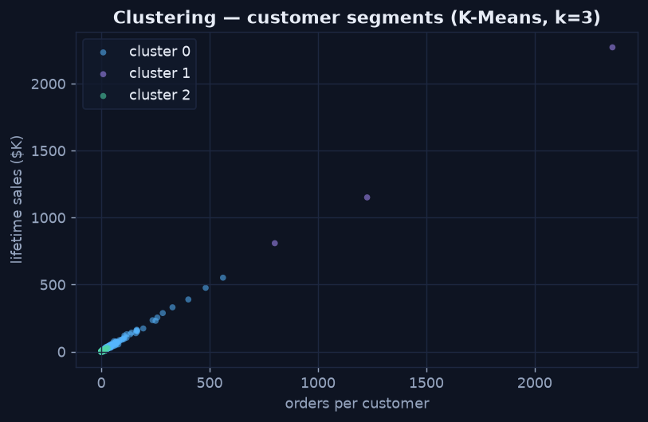

Framing the Problem
Chapter 1 — Regression, Classification, or Clustering?
Before any algorithm, the most consequential choice is what kind of question you're asking. Get the framing wrong and no amount of tuning will save you. Three framings cover most cases.
The Three Framings
- Regression — predict a number: next month's revenue, a customer's lifetime sales, days to delivery. The output is continuous, and you measure error in the target's own units.
- Classification — predict a label: will this customer churn (yes/no), which tier, fraud or not. The output is a category, usually with a probability attached.
- Clustering — find groups with no labels at all. This is unsupervised: there is no known answer to predict; the algorithm discovers structure in the data itself.
Clustering in Action — Segmenting the Customer Base
Clustering is the framing that surprises people, because there is no target column. K-Means groups customers by similarity across chosen features — here, lifetime sales, order count, and average discount — and the groups emerge from the data. The scatter below colours each customer by its assigned cluster: a high-value frequent group separates cleanly from occasional, low-value buyers.
Python · scikit-learn
from sklearn.preprocessing import StandardScaler
from sklearn.cluster import KMeans
feats = cust[["total_sales", "orders", "avg_discount"]]
X = StandardScaler().fit_transform(feats) # scale first — K-Means uses distance
cust["cluster"] = KMeans(n_clusters=3, n_init=10, random_state=42).fit_predict(X)
K-Means finds three natural customer segments with no labels — separating frequent high-value buyers from occasional, low-value ones.
Picking the Framing
Ask what the answer looks like. A dollar amount → regression. A yes/no or category → classification. "Are there natural groups here?" with no predefined answer → clustering. The same dataset can support all three: predict a customer's spend (regression), flag who will churn (classification), or discover segments (clustering). Each of the next chapters takes one of these and runs it end to end.